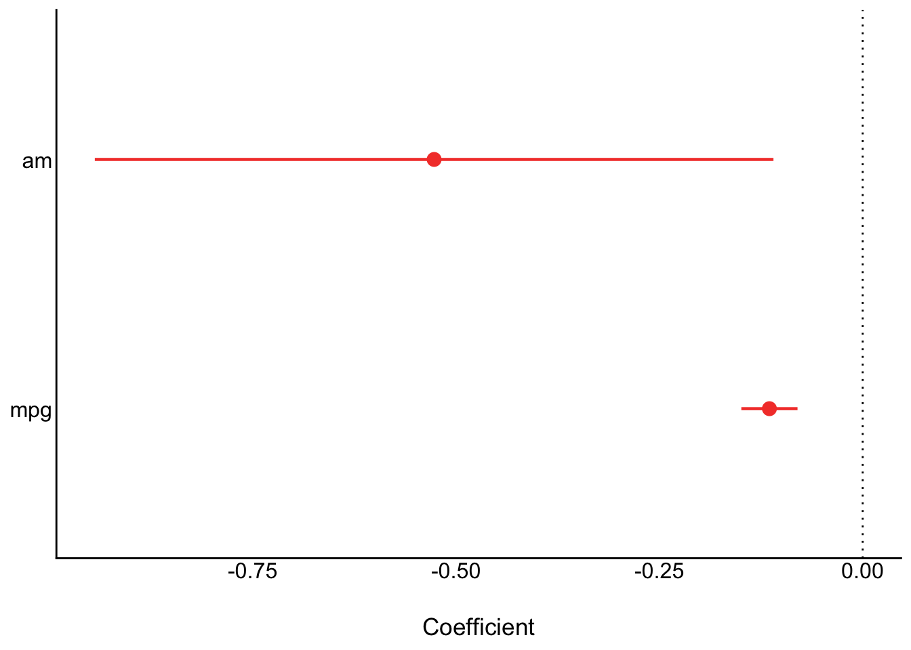
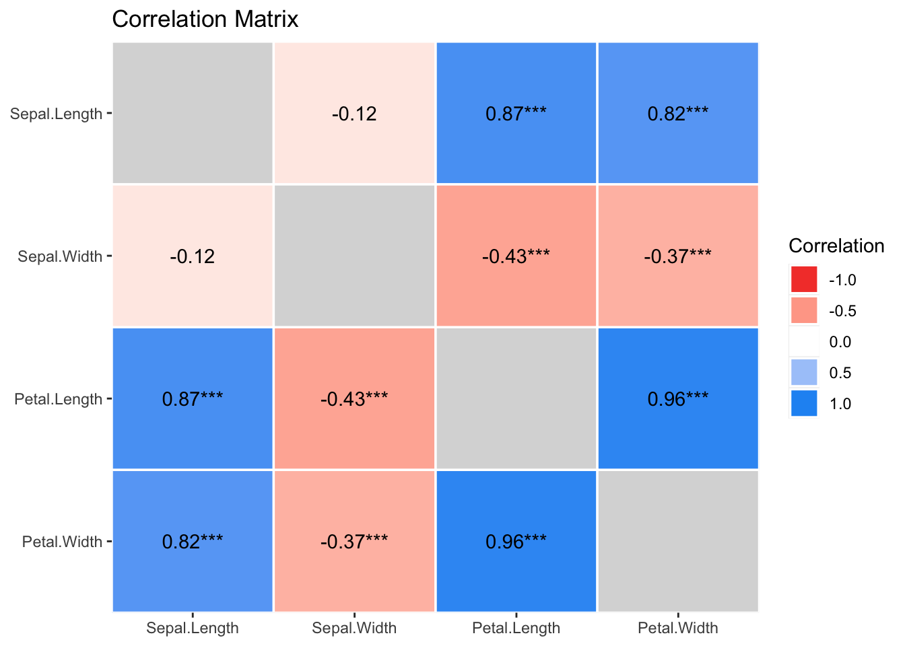
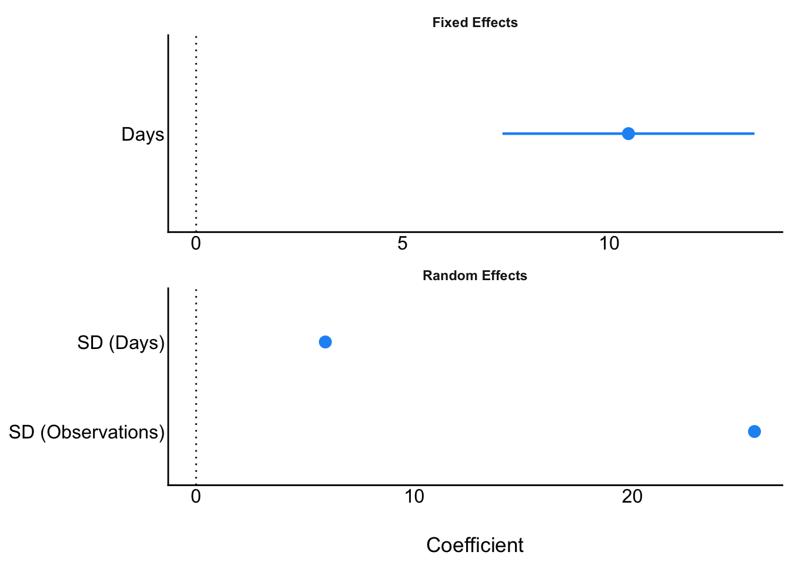
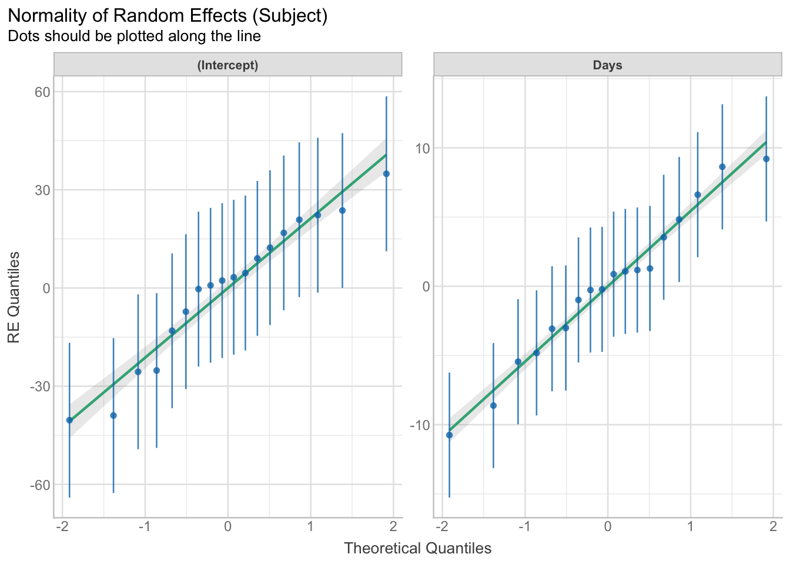
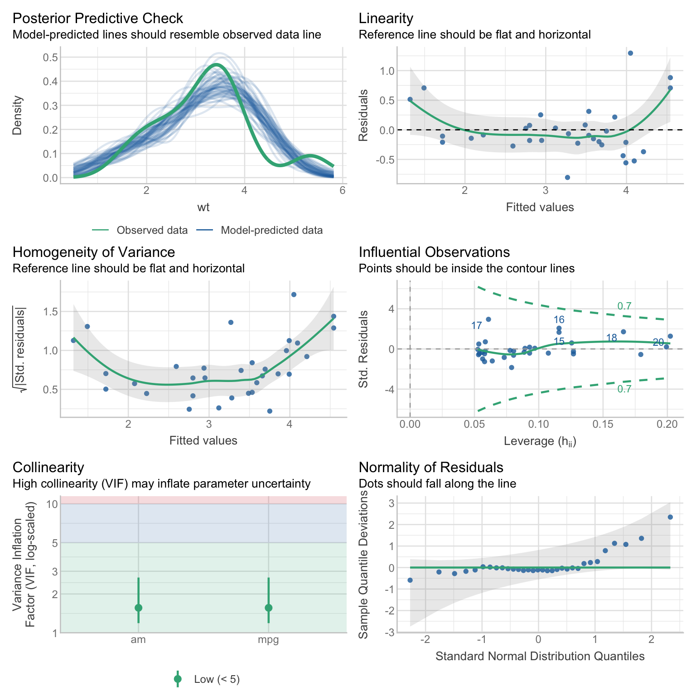
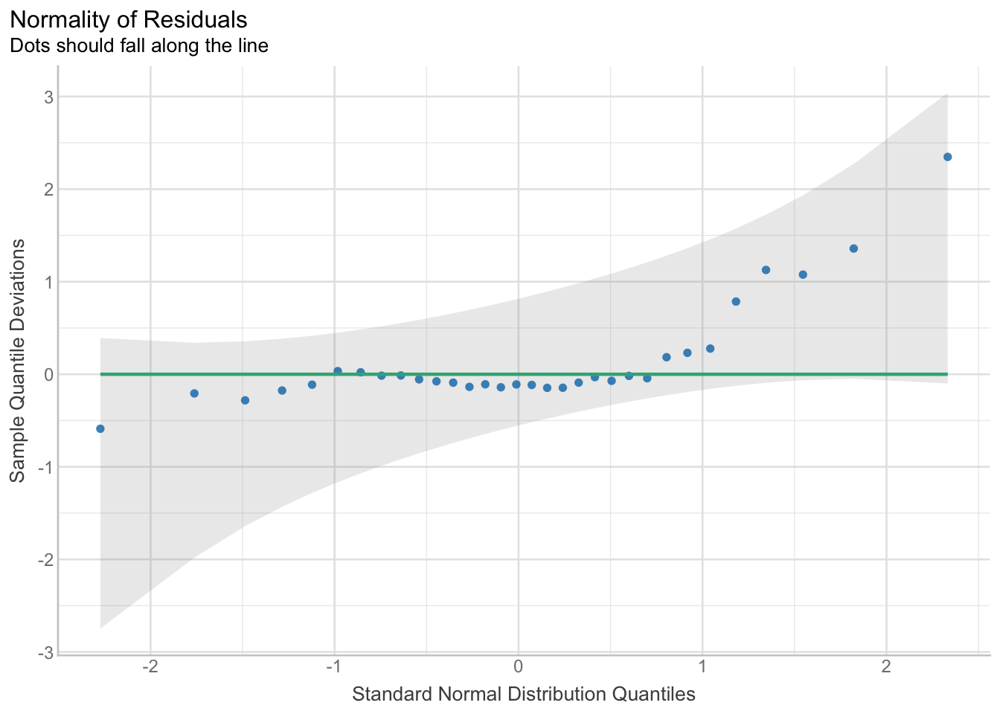
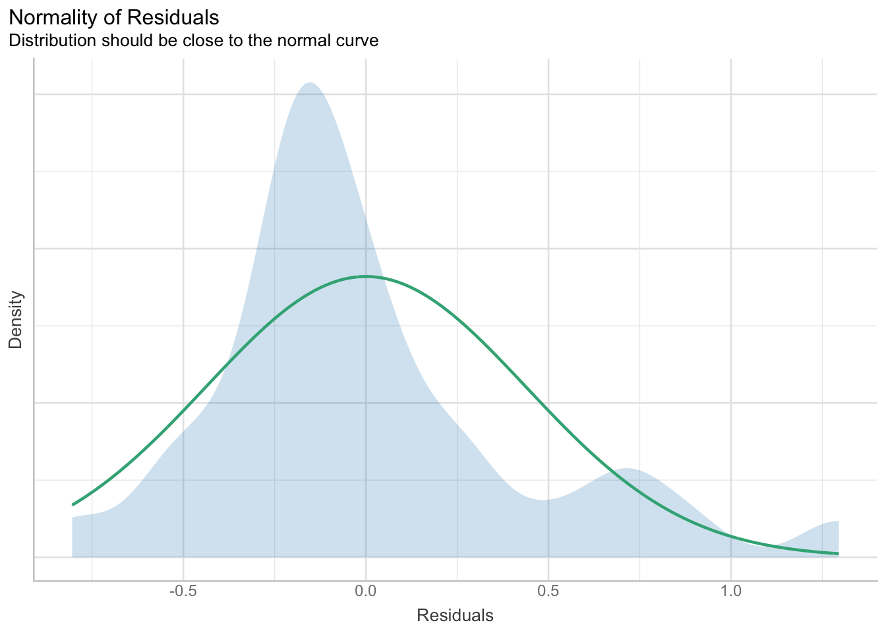
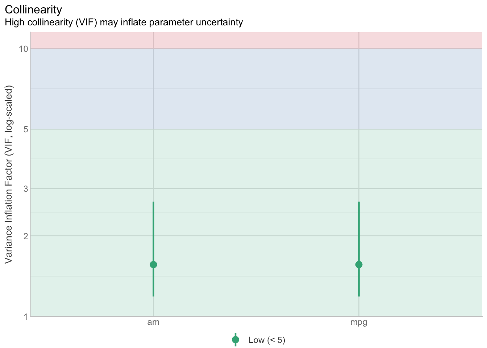
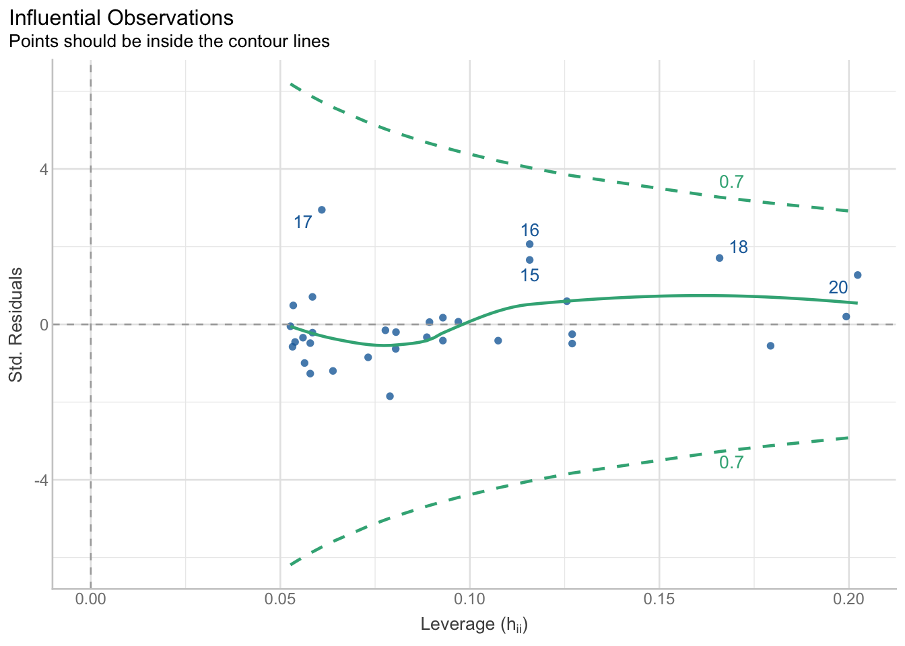
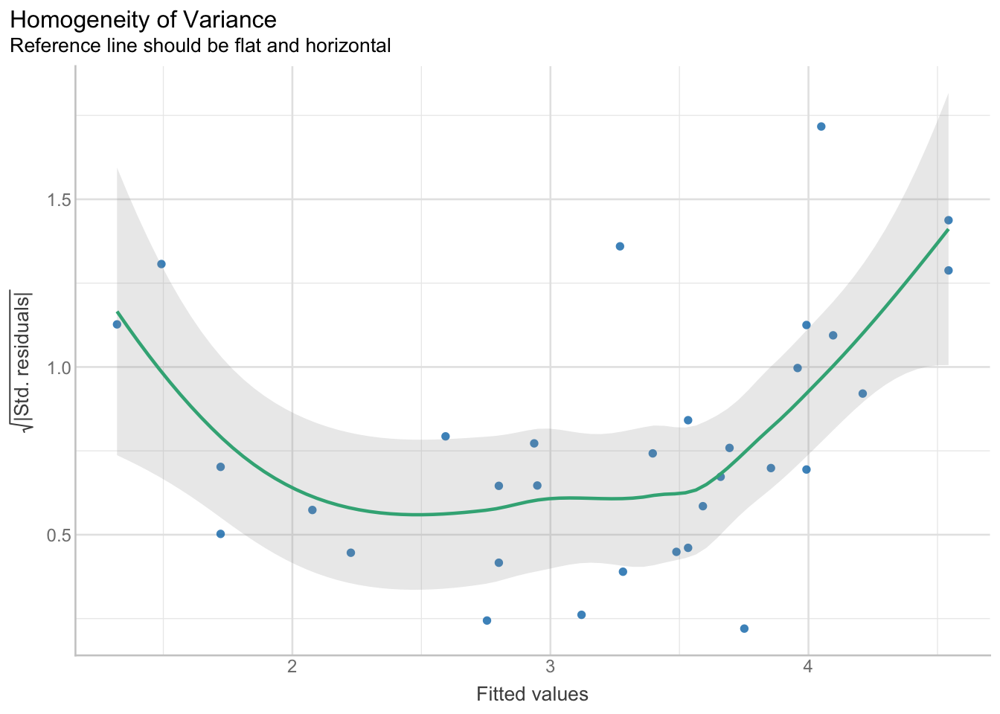

library(dplyr)
library(readr)
library(report) # part of {easystats}
library(see) # part of {easystats}
library(parameters) # part of {easystats}
library(correlation) # part of {easystats}
library(effectsize) # part of {easystats}
library(performance) # part of {easystats}
library(janitor)
library(lme4)
library(knitr)
library(kableExtra)15 Reporting
15.1 Dependencies
15.2 Inference tests
15.2.1 Regressions
# fit model
model <- lm(wt ~ 1 + am + mpg, data = mtcars)
# report - text output (nb omits intercept!)
report(model)We fitted a linear model (estimated using OLS) to predict wt with am and mpg
(formula: wt ~ 1 + am + mpg). The model explains a statistically significant
and substantial proportion of variance (R2 = 0.80, F(2, 29) = 57.66, p < .001,
adj. R2 = 0.79). The model's intercept, corresponding to am = 0 and mpg = 0, is
at 5.74 (95% CI [5.11, 6.36], t(29) = 18.64, p < .001). Within this model:
- The effect of am is statistically significant and negative (beta = -0.53, 95%
CI [-0.94, -0.11], t(29) = -2.58, p = 0.015; Std. beta = -0.27, 95% CI [-0.48,
-0.06])
- The effect of mpg is statistically significant and negative (beta = -0.11,
95% CI [-0.15, -0.08], t(29) = -6.79, p < .001; Std. beta = -0.71, 95% CI
[-0.92, -0.49])
Standardized parameters were obtained by fitting the model on a standardized
version of the dataset. 95% Confidence Intervals (CIs) and p-values were
computed using a Wald t-distribution approximation.# each parameter (including intercept)
report_parameters(model) - The intercept is statistically significant and positive (beta = 5.74, 95% CI [5.11, 6.36], t(29) = 18.64, p < .001; Std. beta = 7.12e-17, 95% CI [-0.17, 0.17])
- The effect of am is statistically significant and negative (beta = -0.53, 95% CI [-0.94, -0.11], t(29) = -2.58, p = 0.015; Std. beta = -0.27, 95% CI [-0.48, -0.06])
- The effect of mpg is statistically significant and negative (beta = -0.11, 95% CI [-0.15, -0.08], t(29) = -6.79, p < .001; Std. beta = -0.71, 95% CI [-0.92, -0.49])# just parameters in text format
report_statistics(model)beta = 5.74, 95% CI [5.11, 6.36], t(29) = 18.64, p < .001; Std. beta = 7.12e-17, 95% CI [-0.17, 0.17]
beta = -0.53, 95% CI [-0.94, -0.11], t(29) = -2.58, p = 0.015; Std. beta = -0.27, 95% CI [-0.48, -0.06]
beta = -0.11, 95% CI [-0.15, -0.08], t(29) = -6.79, p < .001; Std. beta = -0.71, 95% CI [-0.92, -0.49]# just parameters in table format
parameters(model)| Parameter | Coefficient | SE | CI | CI_low | CI_high | t | df_error | p |
|---|---|---|---|---|---|---|---|---|
| (Intercept) | 5.7355639 | 0.3077263 | 0.95 | 5.1061930 | 6.3649348 | 18.638525 | 29 | 0.0000000 |
| am | -0.5269568 | 0.2039939 | 0.95 | -0.9441712 | -0.1097424 | -2.583199 | 29 | 0.0150986 |
| mpg | -0.1146922 | 0.0168893 | 0.95 | -0.1492347 | -0.0801496 | -6.790807 | 29 | 0.0000002 |
# just parameters in table html format
parameters(model) |>
mutate(p = insight::format_p(p)) |>
mutate_if(is.numeric, round_half_up, digits = 2) |>
kable() |>
kable_classic(full_width = FALSE)| Parameter | Coefficient | SE | CI | CI_low | CI_high | t | df_error | p |
|---|---|---|---|---|---|---|---|---|
| (Intercept) | 5.74 | 0.31 | 0.95 | 5.11 | 6.36 | 18.64 | 29 | p < .001 |
| am | -0.53 | 0.20 | 0.95 | -0.94 | -0.11 | -2.58 | 29 | p = 0.015 |
| mpg | -0.11 | 0.02 | 0.95 | -0.15 | -0.08 | -6.79 | 29 | p < .001 |
# what if i just want some of these cols?
parameters(model) |>
as.data.frame() |>
mutate(p = insight::format_p(p)) |>
select(r = Coefficient, ci_lower = CI_low, ci_upper = CI_high, p) |>
mutate_if(is.numeric, round_half_up, digits = 2)| r | ci_lower | ci_upper | p |
|---|---|---|---|
| 5.74 | 5.11 | 6.36 | p < .001 |
| -0.53 | -0.94 | -0.11 | p = 0.015 |
| -0.11 | -0.15 | -0.08 | p < .001 |
# table in markdown format
report_table(model)| Parameter | Coefficient | CI | CI_low | CI_high | t | df_error | p | Std_Coefficient | Std_Coefficient_CI_low | Std_Coefficient_CI_high | Fit | |
|---|---|---|---|---|---|---|---|---|---|---|---|---|
| 1 | (Intercept) | 5.7355639 | 0.95 | 5.1061930 | 6.3649348 | 18.638525 | 29 | 0.0000000 | 0.0000000 | -0.1675614 | 0.1675614 | NA |
| 2 | am | -0.5269568 | 0.95 | -0.9441712 | -0.1097424 | -2.583199 | 29 | 0.0150986 | -0.2687359 | -0.4815057 | -0.0559661 | NA |
| 3 | mpg | -0.1146922 | 0.95 | -0.1492347 | -0.0801496 | -6.790807 | 29 | 0.0000002 | -0.7064629 | -0.9192327 | -0.4936930 | NA |
| 4 | NA | NA | NA | NA | NA | NA | NA | NA | NA | NA | NA | NA |
| 5 | AIC | NA | NA | NA | NA | NA | NA | NA | NA | NA | NA | 45.0491609 |
| 6 | AICc | NA | NA | NA | NA | NA | NA | NA | NA | NA | NA | 46.5306424 |
| 7 | BIC | NA | NA | NA | NA | NA | NA | NA | NA | NA | NA | 50.9121045 |
| 8 | R2 | NA | NA | NA | NA | NA | NA | NA | NA | NA | NA | 0.7990675 |
| 9 | R2 (adj.) | NA | NA | NA | NA | NA | NA | NA | NA | NA | NA | 0.7852101 |
| 11 | Sigma | NA | NA | NA | NA | NA | NA | NA | NA | NA | NA | 0.4534704 |
# table in html format - needs to be rounded manually
report_table(model) |>
mutate(p = insight::format_p(p)) |>
mutate_if(is.numeric, round_half_up, digits = 2) |>
kable() |>
kable_classic(full_width = FALSE)| Parameter | Coefficient | CI | CI_low | CI_high | t | df_error | p | Std_Coefficient | Std_Coefficient_CI_low | Std_Coefficient_CI_high | Fit | |
|---|---|---|---|---|---|---|---|---|---|---|---|---|
| 1 | (Intercept) | 5.74 | 0.95 | 5.11 | 6.36 | 18.64 | 29 | p < .001 | 0.00 | -0.17 | 0.17 | NA |
| 2 | am | -0.53 | 0.95 | -0.94 | -0.11 | -2.58 | 29 | p = 0.015 | -0.27 | -0.48 | -0.06 | NA |
| 3 | mpg | -0.11 | 0.95 | -0.15 | -0.08 | -6.79 | 29 | p < .001 | -0.71 | -0.92 | -0.49 | NA |
| 4 | NA | NA | NA | NA | NA | NA | NA | NA | NA | NA | NA | |
| 5 | AIC | NA | NA | NA | NA | NA | NA | NA | NA | NA | 45.05 | |
| 6 | AICc | NA | NA | NA | NA | NA | NA | NA | NA | NA | 46.53 | |
| 7 | BIC | NA | NA | NA | NA | NA | NA | NA | NA | NA | 50.91 | |
| 8 | R2 | NA | NA | NA | NA | NA | NA | NA | NA | NA | 0.80 | |
| 9 | R2 (adj.) | NA | NA | NA | NA | NA | NA | NA | NA | NA | 0.79 | |
| 11 | Sigma | NA | NA | NA | NA | NA | NA | NA | NA | NA | 0.45 |
# plot
parameters(model) |>
plot() 
15.2.2 Correlations
15.2.2.1 Single correlation tests
# fit model
model <- cor.test(mtcars$mpg, mtcars$wt)
# report - text output
report(model)Effect sizes were labelled following Funder's (2019) recommendations.
The Pearson's product-moment correlation between mtcars$mpg and mtcars$wt is
negative, statistically significant, and very large (r = -0.87, 95% CI [-0.93,
-0.74], t(30) = -9.56, p < .001)# table in html format - needs to be rounded manually
report_table(model) |>
mutate(p = insight::format_p(p)) |>
mutate_if(is.numeric, round_half_up, digits = 2) |>
kable() |>
kable_classic(full_width = FALSE)| Parameter1 | Parameter2 | r | CI | CI_low | CI_high | t | df_error | p | Method | Alternative |
|---|---|---|---|---|---|---|---|---|---|---|
| mtcars$mpg | mtcars$wt | -0.87 | 0.95 | -0.93 | -0.74 | -9.56 | 30 | p < .001 | Pearson's product-moment correlation | two.sided |
15.2.2.2 Many
results <- correlation(iris)
results| Parameter1 | Parameter2 | r | CI | CI_low | CI_high | t | df_error | p | Method | n_Obs |
|---|---|---|---|---|---|---|---|---|---|---|
| Sepal.Length | Sepal.Width | -0.1175698 | 0.95 | -0.2726932 | 0.0435116 | -1.440287 | 148 | 0.1518983 | Pearson correlation | 150 |
| Sepal.Length | Petal.Length | 0.8717538 | 0.95 | 0.8270363 | 0.9055080 | 21.646019 | 148 | 0.0000000 | Pearson correlation | 150 |
| Sepal.Length | Petal.Width | 0.8179411 | 0.95 | 0.7568971 | 0.8648361 | 17.296454 | 148 | 0.0000000 | Pearson correlation | 150 |
| Sepal.Width | Petal.Length | -0.4284401 | 0.95 | -0.5508771 | -0.2879499 | -5.768449 | 148 | 0.0000001 | Pearson correlation | 150 |
| Sepal.Width | Petal.Width | -0.3661259 | 0.95 | -0.4972130 | -0.2186966 | -4.786461 | 148 | 0.0000081 | Pearson correlation | 150 |
| Petal.Length | Petal.Width | 0.9628654 | 0.95 | 0.9490525 | 0.9729853 | 43.387237 | 148 | 0.0000000 | Pearson correlation | 150 |
results %>%
summary(redundant = TRUE) %>%
plot()
15.2.2.3 By group
iris %>%
select(Species, Sepal.Length, Sepal.Width, Petal.Width) %>%
group_by(Species) %>%
correlation()| Group | Parameter1 | Parameter2 | r | CI | CI_low | CI_high | t | df_error | p | Method | n_Obs |
|---|---|---|---|---|---|---|---|---|---|---|---|
| setosa | Sepal.Length | Sepal.Width | 0.7425467 | 0.95 | 0.5851391 | 0.8460314 | 7.680738 | 48 | 0.0000000 | Pearson correlation | 50 |
| setosa | Sepal.Length | Petal.Width | 0.2780984 | 0.95 | -0.0002703 | 0.5164673 | 2.005847 | 48 | 0.1010529 | Pearson correlation | 50 |
| setosa | Sepal.Width | Petal.Width | 0.2327520 | 0.95 | -0.0487543 | 0.4800023 | 1.658091 | 48 | 0.1038211 | Pearson correlation | 50 |
| versicolor | Sepal.Length | Sepal.Width | 0.5259107 | 0.95 | 0.2900175 | 0.7015599 | 4.283887 | 48 | 0.0000877 | Pearson correlation | 50 |
| versicolor | Sepal.Length | Petal.Width | 0.5464611 | 0.95 | 0.3162110 | 0.7159139 | 4.520673 | 48 | 0.0000807 | Pearson correlation | 50 |
| versicolor | Sepal.Width | Petal.Width | 0.6639987 | 0.95 | 0.4730884 | 0.7953482 | 6.152348 | 48 | 0.0000004 | Pearson correlation | 50 |
| virginica | Sepal.Length | Sepal.Width | 0.4572278 | 0.95 | 0.2049657 | 0.6525292 | 3.561892 | 48 | 0.0016869 | Pearson correlation | 50 |
| virginica | Sepal.Length | Petal.Width | 0.2811077 | 0.95 | 0.0029943 | 0.5188571 | 2.029405 | 48 | 0.0479815 | Pearson correlation | 50 |
| virginica | Sepal.Width | Petal.Width | 0.5377280 | 0.95 | 0.3050368 | 0.7098315 | 4.418702 | 48 | 0.0001694 | Pearson correlation | 50 |
15.2.3 t-tests
NB Cohen’s d is approximated - better to calculate it separately and accurately.
# fit model
model <- t.test(mpg ~ am, data = mtcars)
# report - text output
report(model)Effect sizes were labelled following Cohen's (1988) recommendations.
The Welch Two Sample t-test testing the difference of mpg by am (mean in group
0 = 17.15, mean in group 1 = 24.39) suggests that the effect is negative,
statistically significant, and large (difference = -7.24, 95% CI [-11.28,
-3.21], t(18.33) = -3.77, p = 0.001; Cohen's d = -1.76, 95% CI [-2.82, -0.67])# table in html format - needs to be rounded manually
report_table(model) |>
mutate(p = insight::format_p(p)) |>
mutate_if(is.numeric, round_half_up, digits = 2) |>
kable() |>
kable_classic(full_width = FALSE)| Parameter | Group | Mean_Group1 | Mean_Group2 | Difference | CI | CI_low | CI_high | t | df_error | p | Method | Alternative | d | d_CI_low | d_CI_high |
|---|---|---|---|---|---|---|---|---|---|---|---|---|---|---|---|
| mpg | am | 17.15 | 24.39 | -7.24 | 0.95 | -11.28 | -3.21 | -3.77 | 18.33 | p = 0.001 | Welch Two Sample t-test | two.sided | -1.76 | -2.82 | -0.67 |
# estimate Cohen's d directly from data
cohens_d(mpg ~ am, data = mtcars)| Cohens_d | CI | CI_low | CI_high |
|---|---|---|---|
| -1.477947 | 0.95 | -2.265973 | -0.6705684 |
15.2.4 Multilevel/hierarchical/mixed models
# fit model
model <- lmer(Reaction ~ Days + (Days | Subject), sleepstudy)
# parameters in text format
report(model)We fitted a linear mixed model (estimated using REML and nloptwrap optimizer)
to predict Reaction with Days (formula: Reaction ~ Days). The model included
Days as random effects (formula: ~Days | Subject). The model's total
explanatory power is substantial (conditional R2 = 0.80) and the part related
to the fixed effects alone (marginal R2) is of 0.28. The model's intercept,
corresponding to Days = 0, is at 251.41 (95% CI [237.94, 264.87], t(174) =
36.84, p < .001). Within this model:
- The effect of Days is statistically significant and positive (beta = 10.47,
95% CI [7.42, 13.52], t(174) = 6.77, p < .001; Std. beta = 0.54, 95% CI [0.38,
0.69])
Standardized parameters were obtained by fitting the model on a standardized
version of the dataset. 95% Confidence Intervals (CIs) and p-values were
computed using a Wald t-distribution approximation.# parameters in table format
parameters(model) |>
mutate(p = insight::format_p(p)) |>
mutate_if(is.numeric, round_half_up, digits = 2) |>
kable() |>
kable_classic(full_width = FALSE)| Parameter | Coefficient | SE | CI | CI_low | CI_high | t | df_error | p | Effects | Group |
|---|---|---|---|---|---|---|---|---|---|---|
| (Intercept) | 251.41 | 6.82 | 0.95 | 237.94 | 264.87 | 36.84 | 174 | p < .001 | fixed | |
| Days | 10.47 | 1.55 | 0.95 | 7.42 | 13.52 | 6.77 | 174 | p < .001 | fixed | |
| SD (Intercept) | 24.74 | NA | 0.95 | NA | NA | NA | NA | random | Subject | |
| SD (Days) | 5.92 | NA | 0.95 | NA | NA | NA | NA | random | Subject | |
| Cor (Intercept~Days) | 0.07 | NA | 0.95 | NA | NA | NA | NA | random | Subject | |
| SD (Observations) | 25.59 | NA | 0.95 | NA | NA | NA | NA | random | Residual |
# table in html format - needs to be rounded manually
report_table(model) |>
mutate(p = insight::format_p(p)) |>
mutate_if(is.numeric, round_half_up, digits = 2) |>
kable() |>
kable_classic(full_width = FALSE)| Parameter | Coefficient | CI | CI_low | CI_high | t | df_error | p | Effects | Group | Std_Coefficient | Std_Coefficient_CI_low | Std_Coefficient_CI_high | Fit | |
|---|---|---|---|---|---|---|---|---|---|---|---|---|---|---|
| 1 | (Intercept) | 251.41 | 0.95 | 237.94 | 264.87 | 36.84 | 174 | p < .001 | fixed | 0.00 | -0.32 | 0.32 | NA | |
| 2 | Days | 10.47 | 0.95 | 7.42 | 13.52 | 6.77 | 174 | p < .001 | fixed | 0.54 | 0.38 | 0.69 | NA | |
| 3 | NA | 24.74 | 0.95 | NA | NA | NA | NA | random | Subject | NA | NA | NA | NA | |
| 4 | NA | 5.92 | 0.95 | NA | NA | NA | NA | random | Subject | NA | NA | NA | NA | |
| 5 | NA | 0.07 | 0.95 | NA | NA | NA | NA | random | Subject | NA | NA | NA | NA | |
| 6 | NA | 25.59 | 0.95 | NA | NA | NA | NA | random | Residual | NA | NA | NA | NA | |
| 7 | NA | NA | NA | NA | NA | NA | NA | NA | NA | NA | NA | NA | NA | |
| 8 | AIC | NA | NA | NA | NA | NA | NA | NA | NA | NA | NA | NA | 1755.63 | |
| 9 | AICc | NA | NA | NA | NA | NA | NA | NA | NA | NA | NA | NA | 1756.11 | |
| 10 | BIC | NA | NA | NA | NA | NA | NA | NA | NA | NA | NA | NA | 1774.79 | |
| 11 | R2 (conditional) | NA | NA | NA | NA | NA | NA | NA | NA | NA | NA | NA | 0.80 | |
| 12 | R2 (marginal) | NA | NA | NA | NA | NA | NA | NA | NA | NA | NA | NA | 0.28 | |
| 15 | Sigma | NA | NA | NA | NA | NA | NA | NA | NA | NA | NA | NA | 25.59 |
# plot
parameters(model) |>
plot() 
# check assumptions of random effects
result <- check_normality(model, effects = "random")
plot(result)[[1]]
15.2.5 ANOVAs
# fit model
model <- aov(mpg ~ factor(gear) + factor(carb), data = mtcars)
# commonly used effect size: partial eta squared
eta_squared(model)| Parameter | Eta2_partial | CI | CI_low | CI_high |
|---|---|---|---|---|
| factor(gear) | 0.6894275 | 0.95 | 0.4866768 | 1 |
| factor(carb) | 0.6613418 | 0.95 | 0.4084016 | 1 |
# better effect size: partialomega squared
omega_squared(model)| Parameter | Omega2_partial | CI | CI_low | CI_high |
|---|---|---|---|---|
| factor(gear) | 0.6157386 | 0.95 | 0.3803874 | 1 |
| factor(carb) | 0.5667943 | 0.95 | 0.2602718 | 1 |
15.3 Summary statistics
# all columns
iris |>
group_by(Species) |>
report_table() | Group | Variable | n_Obs | Mean | SD | Median | MAD | Min | Max | Skewness | Kurtosis | n_Missing |
|---|---|---|---|---|---|---|---|---|---|---|---|
| setosa | Sepal.Length | 50 | 5.006 | 0.3524897 | 5.00 | 0.29652 | 4.3 | 5.8 | 0.1200870 | -0.2526888 | 0 |
| setosa | Sepal.Width | 50 | 3.428 | 0.3790644 | 3.40 | 0.37065 | 2.3 | 4.4 | 0.0411665 | 0.9547033 | 0 |
| setosa | Petal.Length | 50 | 1.462 | 0.1736640 | 1.50 | 0.14826 | 1.0 | 1.9 | 0.1063939 | 1.0215761 | 0 |
| setosa | Petal.Width | 50 | 0.246 | 0.1053856 | 0.20 | 0.00000 | 0.1 | 0.6 | 1.2538614 | 1.7191302 | 0 |
| versicolor | Sepal.Length | 50 | 5.936 | 0.5161711 | 5.90 | 0.51891 | 4.9 | 7.0 | 0.1053776 | -0.5330095 | 0 |
| versicolor | Sepal.Width | 50 | 2.770 | 0.3137983 | 2.80 | 0.29652 | 2.0 | 3.4 | -0.3628448 | -0.3662374 | 0 |
| versicolor | Petal.Length | 50 | 4.260 | 0.4699110 | 4.35 | 0.51891 | 3.0 | 5.1 | -0.6065077 | 0.0479033 | 0 |
| versicolor | Petal.Width | 50 | 1.326 | 0.1977527 | 1.30 | 0.22239 | 1.0 | 1.8 | -0.0311796 | -0.4100592 | 0 |
| virginica | Sepal.Length | 50 | 6.588 | 0.6358796 | 6.50 | 0.59304 | 4.9 | 7.9 | 0.1180151 | 0.0329044 | 0 |
| virginica | Sepal.Width | 50 | 2.974 | 0.3224966 | 3.00 | 0.29652 | 2.2 | 3.8 | 0.3659491 | 0.7060705 | 0 |
| virginica | Petal.Length | 50 | 5.552 | 0.5518947 | 5.55 | 0.66717 | 4.5 | 6.9 | 0.5494446 | -0.1537786 | 0 |
| virginica | Petal.Width | 50 | 2.026 | 0.2746501 | 2.00 | 0.29652 | 1.4 | 2.5 | -0.1294769 | -0.6022645 | 0 |
# all columns - html output with rounding
iris |>
group_by(Species) |>
report_table() |>
mutate_if(is.numeric, round_half_up, digits = 2) |>
kable() |>
kable_classic(full_width = FALSE)| Group | Variable | n_Obs | Mean | SD | Median | MAD | Min | Max | Skewness | Kurtosis | n_Missing |
|---|---|---|---|---|---|---|---|---|---|---|---|
| setosa | Sepal.Length | 50 | 5.01 | 0.35 | 5.00 | 0.30 | 4.3 | 5.8 | 0.12 | -0.25 | 0 |
| setosa | Sepal.Width | 50 | 3.43 | 0.38 | 3.40 | 0.37 | 2.3 | 4.4 | 0.04 | 0.95 | 0 |
| setosa | Petal.Length | 50 | 1.46 | 0.17 | 1.50 | 0.15 | 1.0 | 1.9 | 0.11 | 1.02 | 0 |
| setosa | Petal.Width | 50 | 0.25 | 0.11 | 0.20 | 0.00 | 0.1 | 0.6 | 1.25 | 1.72 | 0 |
| versicolor | Sepal.Length | 50 | 5.94 | 0.52 | 5.90 | 0.52 | 4.9 | 7.0 | 0.11 | -0.53 | 0 |
| versicolor | Sepal.Width | 50 | 2.77 | 0.31 | 2.80 | 0.30 | 2.0 | 3.4 | -0.36 | -0.37 | 0 |
| versicolor | Petal.Length | 50 | 4.26 | 0.47 | 4.35 | 0.52 | 3.0 | 5.1 | -0.61 | 0.05 | 0 |
| versicolor | Petal.Width | 50 | 1.33 | 0.20 | 1.30 | 0.22 | 1.0 | 1.8 | -0.03 | -0.41 | 0 |
| virginica | Sepal.Length | 50 | 6.59 | 0.64 | 6.50 | 0.59 | 4.9 | 7.9 | 0.12 | 0.03 | 0 |
| virginica | Sepal.Width | 50 | 2.97 | 0.32 | 3.00 | 0.30 | 2.2 | 3.8 | 0.37 | 0.71 | 0 |
| virginica | Petal.Length | 50 | 5.55 | 0.55 | 5.55 | 0.67 | 4.5 | 6.9 | 0.55 | -0.15 | 0 |
| virginica | Petal.Width | 50 | 2.03 | 0.27 | 2.00 | 0.30 | 1.4 | 2.5 | -0.13 | -0.60 | 0 |
# subset of columns
iris |>
group_by(Species) |>
report_table() |>
select(Group, Variable, n_Obs, Mean, SD) |>
mutate_if(is.numeric, round_half_up, digits = 2) |>
kable() |>
kable_classic(full_width = FALSE)| Group | Variable | n_Obs | Mean | SD |
|---|---|---|---|---|
| setosa | Sepal.Length | 50 | 5.01 | 0.35 |
| setosa | Sepal.Width | 50 | 3.43 | 0.38 |
| setosa | Petal.Length | 50 | 1.46 | 0.17 |
| setosa | Petal.Width | 50 | 0.25 | 0.11 |
| versicolor | Sepal.Length | 50 | 5.94 | 0.52 |
| versicolor | Sepal.Width | 50 | 2.77 | 0.31 |
| versicolor | Petal.Length | 50 | 4.26 | 0.47 |
| versicolor | Petal.Width | 50 | 1.33 | 0.20 |
| virginica | Sepal.Length | 50 | 6.59 | 0.64 |
| virginica | Sepal.Width | 50 | 2.97 | 0.32 |
| virginica | Petal.Length | 50 | 5.55 | 0.55 |
| virginica | Petal.Width | 50 | 2.03 | 0.27 |
15.4 Assumption checks
Beware that checking assumptions can lead to as many bad practices as it does good ones! (e.g., poorly justified post hoc outlier exclusion)
15.4.1 Multiple checks at once
# fit model
model <- lm(wt ~ 1 + am + mpg, data = mtcars)
# check multiple model assumptions
check_model(model)
15.4.2 Normality of distribution of residuals
res_normality <- check_normality(model)
res_normalityWarning: Non-normality of residuals detected (p = 0.013).plot(res_normality, type = "qq")
plot(res_normality, type = "density")
15.4.3 Multicolinearity
res_collinearity <- check_collinearity(model)
res_collinearity| Term | VIF | VIF_CI_low | VIF_CI_high | SE_factor | Tolerance | Tolerance_CI_low | Tolerance_CI_high |
|---|---|---|---|---|---|---|---|
| am | 1.562009 | 1.187808 | 2.681793 | 1.249804 | 0.6402011 | 0.3728849 | 0.8418868 |
| mpg | 1.562009 | 1.187808 | 2.681793 | 1.249804 | 0.6402011 | 0.3728849 | 0.8418868 |
plot(res_collinearity)
15.4.4 Outliers
res_outliers <- check_outliers(model, method = "cook") # "all" requires other dependencies and can take some time to run
#res_outliers <- check_outliers(model, method = "all") # "all" requires other dependencies and can take some time to run
res_outliersOK: No outliers detected.
- Based on the following method and threshold: cook (0.808).
- For variable: (Whole model)plot(res_outliers)
15.4.5 Heteroscedasticity
res_het <- check_heteroscedasticity(model)
res_hetOK: Error variance appears to be homoscedastic (p = 0.053).plot(res_het)